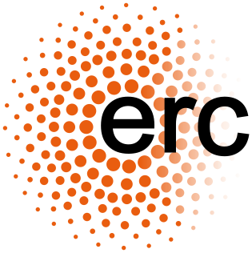
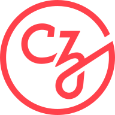
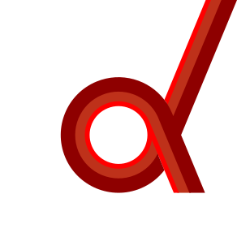

Sponsors#
Maintenance and development of MNE-Python is currently supported by the following funding agencies and partners:
National Institutes of Health: R01-NS104585
 US National Science Foundation:
2449064
US National Science Foundation:
2449064
Past sponsors#
National Institutes of Health: R01-EB009048, R01-EB006385, R01-HD040712, R01-NS044319, R01-NS037462, P41-EB015896, P41-RR014075

European Research Council: YStG-263584, YStG-676943US Department of Energy: DE-FG02-99ER62764 (MIND)
Agence Nationale de la Recherche: 14-NEUC-0002-01, 11-IDEX-0003-02
Paris-Saclay Center for Data Science: PARIS-SACLAY
Google: Summer of code (×8 years)
Amazon: AWS Research Grants

Chan Zuckerberg Initiative: EOSS2, EOSS4
Supporting institutions#
Some institutions support their employees’ contributions to MNE-Python as part of normal work duties. Current supporting institutions include:

Donders Institute for Brain, Cognition and Behaviour at Radboud UniversityInstitute for Learning & Brain Sciences at University of Washington